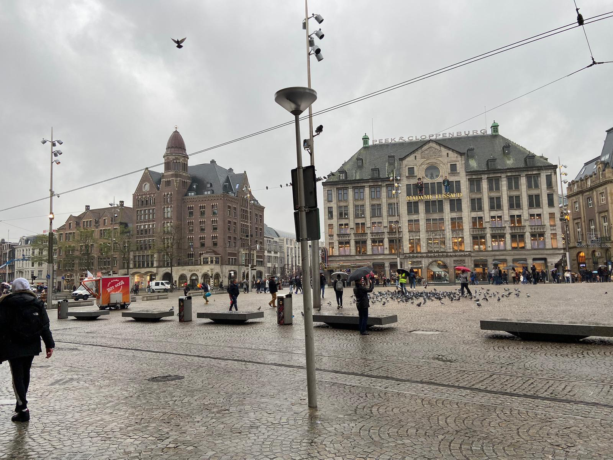
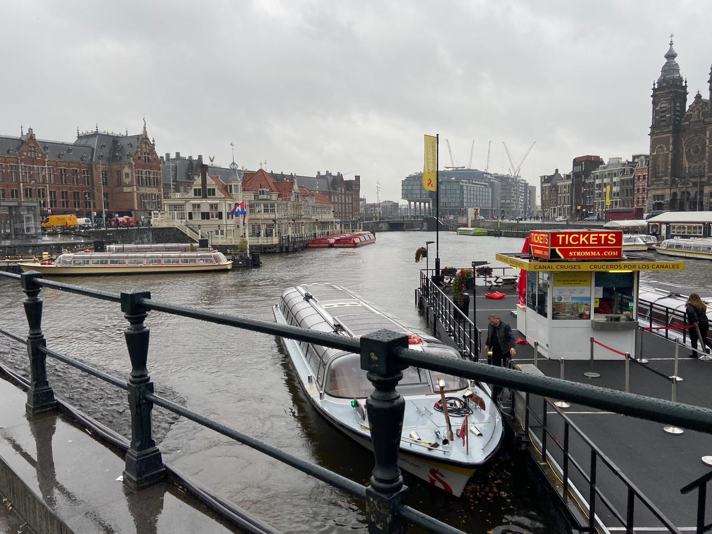

Amsterdam
De stad Amsterdam. Hoofdstad van Nederland. De stad in de wereld waar wiet roken legaal is. Daarnaast heb je de beroemde wallen. Waar je voor een kleine bedrag van 50 euro je fantasieën waar kunt maken. Naast de gezelligheid is de stad ook erg historisch. Zo heb je bijvoorbeeld Anne Frank huis, musea, de grachten, Schiphol en Centraal Station. Amsterdam staat bekend wegens de vrijheid die zich bevindt. Hierdoor kunnen toeristen dingen doen die normaal gesproken illigaal zijn in hun eigen land. Hierdoor is het een erg populaire stad om te verkennen.
 